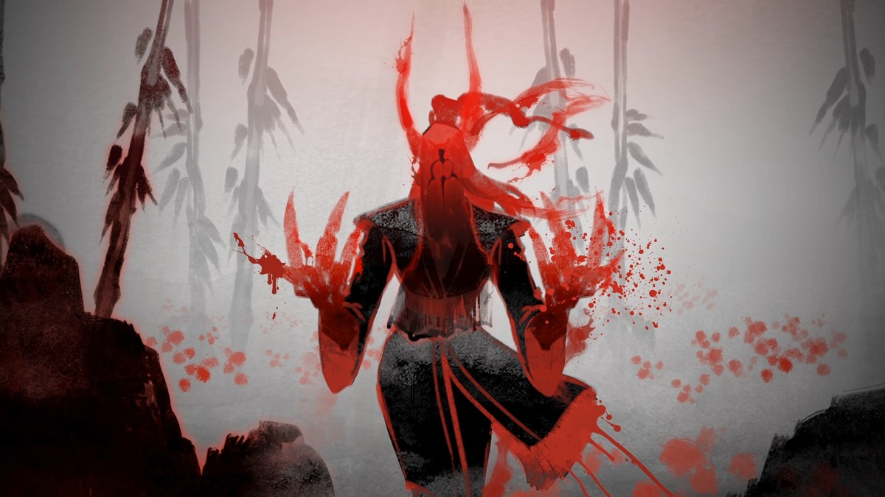

Fun Things to Try in Pubs
Don't miss these great techniques!
There are always fun things to try in Dota. The sandbox nature of the game leaves a lot of room for effective creativity. Some of the ideas presented today might be hard to pull off, but with some work we believe they can work wonders for your party. click here to read more.
Subscribe More infoMeta of the Day

Wraith King, On the millennial solstice known as Wraith-Night, Ostarion stood frozen amid the carnage, absorbing innumerable souls as his champions sacrificed their lives for the King.
Invoker, A competent wizard knows perhaps two spells; an exceptional one, three or four. Wielding the elements of Quas, Wex and Exort, the Invoker surpasses them all.
Still not sure? Try our strategy today or you'll be a Noob forever.